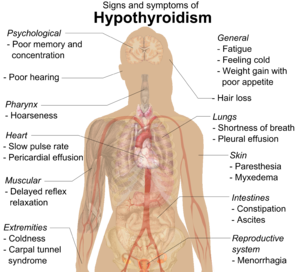

Hypothyroidism

SYMPTOMS:
The signs and symptoms of hypothyroidism vary, depending on the severity of the hormone deficiency. Problems tend to develop slowly, often over a number of years.
- Fatigue
-
Increased sensitivity to cold
-
Constipation
-
Dry skin
-
Weight gain
-
Puffy face
-
Hoarseness
-
Muscle weakness
-
Elevated blood cholesterol level
-
Muscle aches, tenderness and stiffness
-
Pain, stiffness or swelling in your joints
-
Heavier than normal or irregular menstrual periods
-
Thinning hair
-
Slowed heart rate
-
Depression
-
Impaired memory
-
Enlarged thyroid gland (goiter)
CAUSES
- When your thyroid doesn't produce enough hormones, the balance of chemical reactions in your body can be upset. There can be a number of causes, including autoimmune disease, hyperthyroidism treatments, radiation therapy, thyroid surgery and certain medications.
-
Your thyroid is a small, butterfly-shaped gland situated at the base of the front of your neck, just below your Adam's apple. Hormones produced by the thyroid gland — triiodothyronine (T3) and thyroxine (T4) — have an enormous impact on your health, affecting all aspects of your metabolism. These hormones also influence the control of vital functions, such as body temperature and heart rate.
-
Hypothyroidism results when the thyroid gland fails to produce enough hormones.
DIAGNOSIS
- People with symptoms of fatigue, cold intolerance, constipation, and dry, flaky skin may have hypothyroidism. A blood test can confirm the diagnosis.
-
"Secondary" or "tertiary" hypothyroidism occurs when the decrease in thyroid hormone is due to a defect of the pituitary gland or hypothalamus. A special test, known as the TRH test, can help distinguish if the disease is caused by a defect in the pituitary or the hypothalamus. This test requires an injection of the TRH hormone and is performed by a doctor that treats thyroid conditions (endocrinologist or hormone specialist).
-
Blood work confirms the diagnosis of hypothyroidism, but does not identify the cause. A combination of the patient's clinical history, antibody screening, and a thyroid scan can help diagnose the underlying thyroid problem more clearly.
-
An MRI of the brain and other tests may be ordered if the cause is thought to be from pituitary gland or hypothalamic problems.
TREATMENT
- Hypothyroidism can be easily treated with thyroid hormone replacement. The preferred treatment for most people with an underactive thyroid is levothyroxine sodium (Levoxyl, Synthroid). This is a more stable form of thyroid hormone and requires once a day dosing.Liothyronine sodium (Cytomel) also may be prescribed to treat hypothyroidism under certain conditions.
-
With the exception of certain conditions, the treatment of hypothyroidism requires life-long therapy. However, over treating hypothyroidism with excessive thyroid medication is potentially harmful and can cause problems with heart palpitations and blood pressure control, and contribute to osteoporosis.